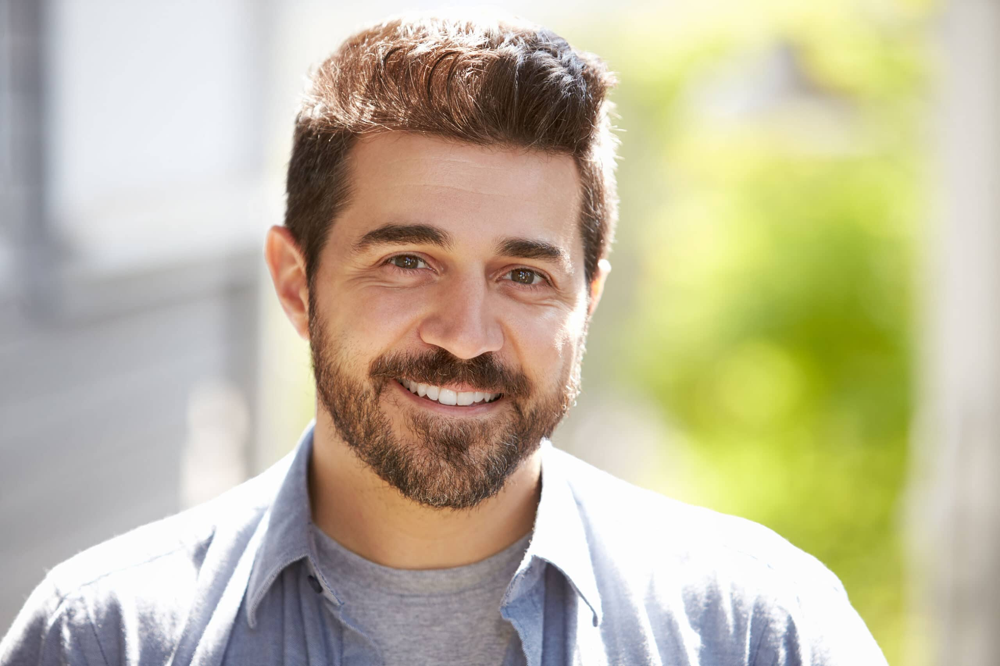
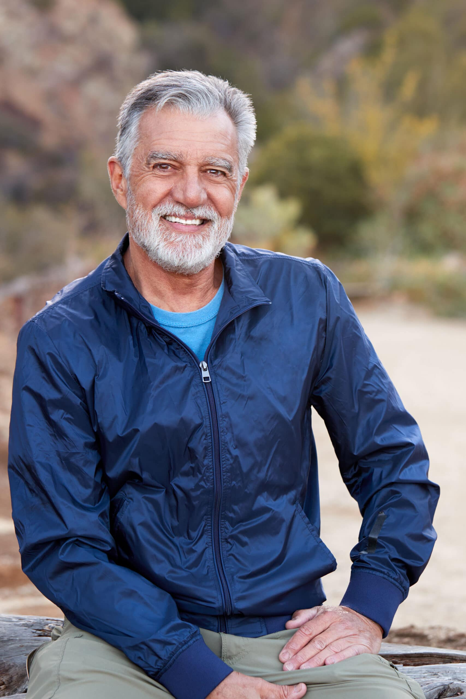
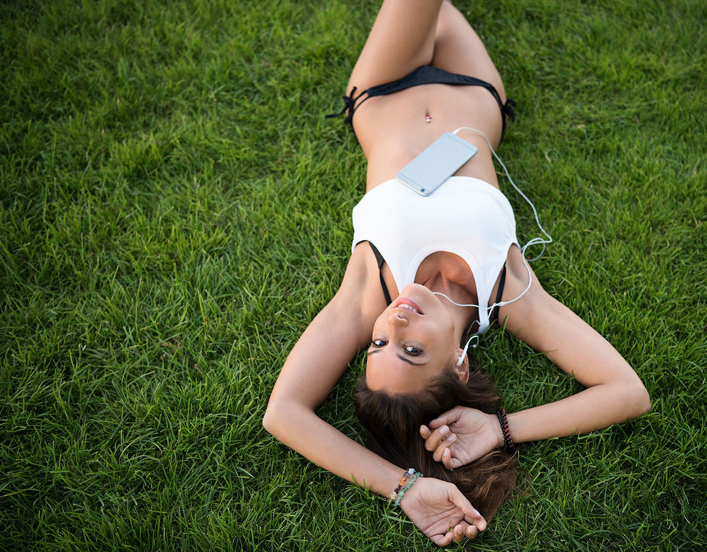

Infos & FAQ zum Tinder Fotoshooting
Warum du mit professionellen Fotos mehr Erfolg hast.
Wenn du dich über Tinder auf Partnersuche machst, solltest du unbedingt grossen Wert auf professionelle Bilder legen. Gerade bei Tinder wird anhand deiner Profilbilder innert Sekunden entschieden, ob du «top» oder «flopp» bist. Lass dich deshalb nicht wegen einem schlechten Foto einfach so wegwischen, denn mit einem aussagekräftigen und durchdachten Profilfoto kannst du in diesen wenigen Sekunden deine Welt verändern.
Wie das funktioniert? Ganz einfach. Das menschliche Gehirn ist in der Lage, innert wenigen Sekunden eine grosse Menge an Informationen zu verarbeiten. Es liegt nun mal in der Natur des Menschen, dass wir beim ersten Betrachten eines Gesichtes innert Millisekunden beurteilen und entscheiden, ob wir die Person sympathisch und anziehend finden. Dabei geht es nicht nur immer um das Optische, du kannst mit Bildern auch viele Informationen weitergeben, z.B. über deinen Beruf, deine Hobbies, deine Lebenseinstellung usw. Bist du der fröhliche Typ Mensch oder eher der nachdenkliche, ruhig oder impulsiv, intro- oder extrovertiert, sinnlich oder oberflächlich … All diese Eigenschaften kannst du mit deinen Bildern dem Betrachter mitgeben, und nur so können die richtigen Personen auf dich ansprechen.
Mit einem Partybild oder einem Selfie im Badezimmer funktioniert dies mit Bestimmtheit und 100%-iger Garantie nicht!
Wie kann dir ein Fotograf bei deinen Zielen helfen?
Gesichtsausdruck, Körperhaltung, deine Bewegung, Kleidung, Hintergrund und das richtige Licht sind wichtige Faktoren, die viel über dich und deine Persönlichkeit erzählen. Damit du all dies mit deinen Bildern erzählen kannst, braucht es einen erfahrenen Profi, der neben dem technischen Know-how auch eine grosse Portion an Feingefühl mitbringt, um dich nicht nur ins schönste Licht, sondern eben auch in das für dich beste Licht rückt.
Ein Profi findet nicht nur die schönen Perspektiven zu deinem Äusseren, er sieht auch hinter die Facetten und erkennt das Wesen im Menschen und erarbeitet mit dir die zu dir passenden Bilder. Dabei setzt er dich nicht in «Tussi-» oder «Mackerposen», er lässt dich wie du bist und hilft dir dabei, dich mit kleinen und feinen Anweisungen optimal und vorteilhaft darzustellen. Natürlich wirken kann nur, wer auch natürlich ist, und deshalb machen wir keine Person aus dir, die du nicht bist. Du willst ja letztendlich ein passendes Gegenüber finden.
Warum ist das Foto so wichtig?
Das Foto erzeugt immer das erste, entscheidende Gefühl. Nicht umsonst wünschen auch Unternehmen für Bewerbungen ein Bild, auch wenn sie dieses nicht vorschreiben dürfen. Bilder machen uns nahbar und hinterlassen einen bleibenden Eindruck. Online-Partnervermittlungen wie Tinder, ElitePartner & Co. verweisen immer wieder darauf, dass gute Profilfotos 90 % mehr Anfragen von interessierten potenziellen Partnern generieren. Die Partnervermittler müssen es wissen, denn sie werten für solche Fakten riesige Datenmengen aus.
Warum machen wir authentische Fotos von dir?
Die meisten Online-Partnervermittlungen ermöglichen das Einstellen mehrerer Bilder. Dies nutzen wir aus, um Authentizität zu vermitteln. Diese Bilder zeigen dich beim Hobby, vielleicht beim Spaziergang mit dem Hund, bei einer Wanderung, möglicherweise auch bei der Arbeit. Wichtig dabei ist, dass der vermittelte Eindruck stimmt. Ein gestelltes Bild vom Skiabfahrtslauf, den du nicht beherrschst, oder im Porsche, den du nicht besitzt, wäre sehr fatal. Spätestens nach dem zweiten Date fliegen solche Hochstapeleien auf, zurück bleibt eine gigantische Enttäuschung, die am Selbstvertrauen nagt.



